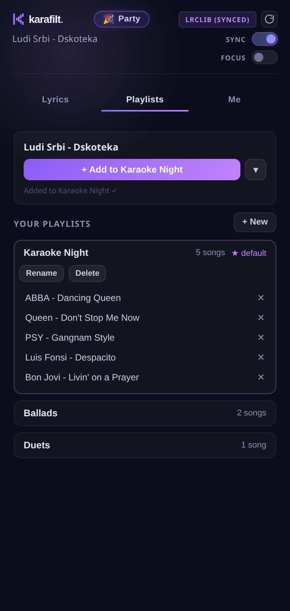

➕
One tap while it plays
Hear a song you'll want to sing again? Add it to a playlist without leaving the tab — the ▾ picker chooses which one.
☁️
Synced to your account
Playlists follow you to any computer and survive reinstalls. Offline? The panel shows your saved copy.
▶️
Play it back, filtered
Tap any entry and it opens right on the tab Karafilt is filtering — vocals out, lyrics on, ready to sing.
